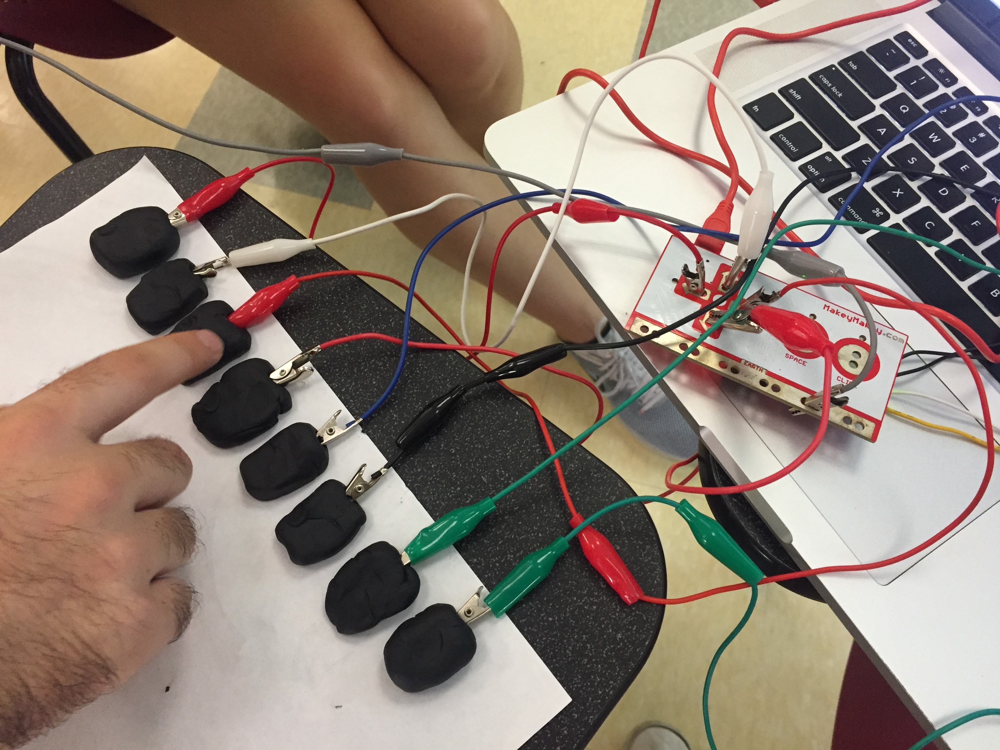

I sought out to make a game that was a bit more peaceful than Breakout 1.0, so I thought about what I personally find peaceful. I was inspired by a photo that I found on Unsplash (these photos are free to use!), and knew I had to use it to make a game. And so I did, and now that image is the background photo of the game above.
One of the biggest challenges I faced in making this game was finding peaceful sounds! It's easy to find loud "ta-da" type sounds to play when the player scores a point, but I didn't want the sound to take away from the theme. Ultimately, the "point" sound I chose is a pin-drop sound because it's quite subtle.
For our physical interface, we made a piano! We built it with black Playdough and the Makey Makey. To complete the circuit, the player needs to wear and aluminum bracelet while playing.
